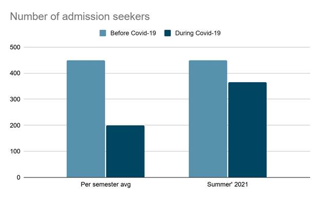

Project information
Project 10
Course Code and Name: MSJ11342 Public Relations Research
Project Name: Research project
Topic: Strategic shift in University of Liberal Arts Bangladesh’s student admission process amid Covid-19
Date of Project: Spring 2021
Project Description:
The motive of this project was to taught us how to write appropriate public relations research in professional field. So, we got together with our teammates for a brainstorming session decided our topic, and then we separated our work based on individual abilities and interests. Writing the introduction, a section of the literature review, the methodology, and section of the discussion was on me. And the others parts were done by Rabbi, Mehedi and Mustafiz. In this project we specifically focused on the changes that happen or need to make due to Covid-19 that affects admission process.
Project
Justification:
Around the time of covid-19, when everything was
happening online the system and practices of every organization changed. That
time it was making some problems for the new students to get admitted and also
for the universities to take new enrollments. So, we decided to conduct PR
research on that issue to know what strategic change needed for the welling of
both the students and the university.
Department of Media Studies and Journalism
MSJ
111342
Public Relations Research
Spring 2021
Research
on
Strategic shift in University of Liberal Arts Bangladesh’s student admission
process amid Covid-19
Submitted
To
Moiyen Zalal Chowdhury, Ph.D.
Assistant Professor
Department of Media Studies and Journalism
University of Liberal Arts Bangladesh (ULAB)
Submitted
By
Samiul Islam (173012001)
Syed Mustafeez Mustafa (173012003)
Mehedi Hasan (173012031)
Ahmed Hasam Rabbi (192012021)
Date
of Submission
May 13, 2021
Abstract
The Covid-19 pandemic has forced educational institutions all over the world to adapt to new sustainable models and leave behind their traditional practices. In Bangladesh’s context, adapting to the new normal has been a challenge because we are yet to be accustomed to digitalization as other developing nations have. In terms of higher education, many private universities have shifted operations online in order to ensure ceaseless curricula for existing students however, in the case of recruiting new students, private universities have been able to ensure smooth online admission process, but the number of admission seekers has dropped drastically amid the Covid-19 pandemic. Out research finding has exhibited a 50% decline in the number of admission seekers at the University of Liberal Arts, Bangladesh (ULAB). Though ULAB has taken upon many initiatives to ensure persistent admission process for admission seekers, the number of admission seeker is still under deficit. Private education institutions in Bangladesh lag behind in terms of adaptation to the practices of the fast-moving world of Industry 4.0. There is no doubt that private educational institutions are doing their level best to carry on with academic activities online, however, it is imperative that these institutions comprehend the gravity of the situation and figure solution that can be sustained in the long run. In this research, we identified the strategic shift of ULAB’s admission process and proposed a systemic review of their assets to improve their website, recruiting process, and online presence.
Keywords
Covid-19, private university admissions, strategic changes, University of Liberal Arts, Bangladesh, ULAB, new recruits, online presence.
Introduction
Background and context
The novel coronavirus (Covid-19) disease caused by severe acute respiratory syndrome, SARS-CoV-2, began spreading in November 2019, in Wuhan, China. The disease spread across continents, first in small clusters, and then resulting in a widespread transmission across the globe (Anderson et al., 2020). By March 11, 2020, the World Health Organization (WHO) announced Covid-19 as a global pandemic (World Health Organization, 2020).
By March 8, 2020, Bangladesh confirmed the first case of coronavirus (Sakib, 2020). Bangladesh declared a “nationwide government holiday” from March 26, 2020, and prior to that, on March 17, 2020, all educational institutions; schools, colleges, universities, madrasas, and coaching centers, were closed to control the spread of the virus. Citizens were asked to practice social distancing, quarantining themselves at home, and maintain proper health and hygiene. Even after the lockdown was extended to keep the infection at bay, the number of cases in Bangladesh accelerated.
During the lockdown, educational institutions, industries, and business operations came to a halt. Most offices gradually adapted to ‘work from home’ models to sustain their businesses and keep the economy afloat. While the major sectors began operating with time, educational institutions were kept closed to curb the risks of the spread of Covid-19. Exams and classes got suspended until further notice from the University Grants Commission (UGC), Bangladesh. Gradually, many private universities resumed operations and have been conducting academic activities online ever since. In order to adapt to such a paradigm shift, these institutions have had to implement various methods and overcome many hurdles.
Surveys and research conducted over the year 2020 have indicated that universities all across the globe have witnessed a significant downfall in the number of students seeking admissions amid the Covid-19 pandemic. In order to tackle this situation, majority universities all over the world have shifted their admissions online in order to ensure a smooth admission process for new recruits (students). Moreover, globally, universities are now prioritizing digital marketing techniques in order to attract students.
In Bangladesh, as the active private universities have managed to shift their classrooms online on Google Meet or Zoom, enrolled students are being able to pursue their credit hours with the hope of earning their respective degrees in due course. Alongside, these private universities have also taken special measures to enroll students who have been seeking admissions at private universities ever since the pandemic hit Bangladesh.
However, for any entity, be it commercial, non-profit, or academic, the process of adapting to new means of operations has been very challenging, especially in a country like Bangladesh where the tech-literacy rate is yet to pick its pace. Thus, to what extent will these new trends of adaptation to the new normal recruitment strategies worldwide be effective in Bangladesh’s context remains unclear.
Problem statement
The Covid-19 pandemic has resulted in the shift of the traditional education system to a more technologically heavy online one. In light of the literature on Covid-19 and its impact on education, universities and other educational institutions have been pushed to determine relatively new strategies to tackle issues regarding recruiting new students for the next semester. The large-scale implementation of admissions amid social distancing and social restrictions will need new adaptations and skill sets for respective stakeholders.
Research objective
The purpose of this paper is to analyze the methods currently being implemented by the (ULAB), in order to recruit new students and measure its effectiveness.
Research questions
Through this research, we seek answers to three prime questions:
- How has the recruitment process changed since the wake of the Covid-19 pandemic?
- What major challenges are ULAB officials and new recruits facing?
- How effective have the strategies implemented been and how can they be improved?
Relevance and importance of the research
The research looks into the new adaptations implemented by ULAB to recruit new students. It addresses the paradigm shift towards the new online admission process from the old traditional one. So far, ULAB has found temporary solutions to keep all its processes functioning for its current and new students. Our research identifies the new strategies being implemented and the challenges being faced by ULAB.
One year has passed since the Covid-19 virus entered Bangladesh and as the future is still unknown, the shifts in our educational system need to be identified and evaluated for future references. This research provides an in-depth analysis of the new online recruitment process for future research.
Literature review
In December 2019, a viral outbreak of a novel virus occurred in Wuhan, China. On January 9, 2020, the World Health Organization (WHO) officially announced the discovery of a novel coronavirus: SARS-Cov2 (WHO, 2020). As the virus rapidly spread from China, crossing borders in a matter of weeks, it forced nations to impose social distancing measures in all sectors, including the education sector. Since April 2020, 184 countries have closed educational institutions, affecting around 90% of the learners around the world (Marinoni et al., 2020). Campuses closed down, classrooms were emptied and replaced by online distance learning platforms.
Key concepts, theories, and studies
According to a research report by the International Association of Universities (IAU), titled “The impact of Covid-19 on higher education around the world”, almost all institutions in the world have been impacted by the Covid-19 and 80% of respondents of the survey conducted for the research believe that Covid-19 will have an impact on the enrolment numbers for the new academic year (Marinoni et al., 2020). The report also states that many respondents are facing an immediate challenge to ensure clear and effective communication streams with staff and students (Marinoni et al., 2020). Higher educational institutions in Asia and the Pacific have shown the most negative responses to enrollment numbers for the new academic year; 85% of the respondents in the IAU report believe that Covid-19 will have a major negative impact on their recruitment numbers (Marinoni et al., 2020). Among many challenges and issues delaying the recruitment of new students, there is a need for educational institutions to ensure adequate entry-level exams (admission exams).
Admission test is one of the major means for determining the basic knowledge level of a student in any field. And for the benefit of the students, many coaching centers and mock examination centers conduct their assessment tests for evaluating the student’s preparation and knowledge base. However, due to this pandemic situation, they are not able to conduct these tests and the ultimate result leads to the dominating presence of frustration among students (AAMC, n.d.).
Despite the obstacles, many universities abroad have adapted to new practices - some are waiving university admission exams. The Covid-19 pandemic was a door for some institutions to change their admission policies. The University of the Cumberlands (UC) has introduced a test-optional application process to help students (University of the Cumberlands, 2020). Educational institutions are now searching for alternative ways to tackle the recruitment issue in 2021.
In today’s digital era, businesses reach customers online, mostly through social media. According to the “Technium Social Sciences Journal”, for educational service providers, students are customers who directly enjoy the educational services they offer. So, during this pandemic as people are home-bound due to the lockdown, educational institutions need to use digital marketing in order to disseminate information using channels such as social media, websites/blogs, multimedia advertising, online/search engine advertising, email marketing, and interactive marketing.
According to the book “Marketing”, digital marketing uses all digital media, including the internet and mobile and interactive channels to develop communication and exchanges with customers (Pride & Ferrell, 2016, 25). Digital marketing in higher education is also important in connecting with alumni who may be active reinforcement and supporters or may re-engage with certain strategies.
Digital marketing is now considered one of the most effective forms of marketing which can broadcast and communicate information in a matter of seconds. Educational institutions can use digital marketing as an important factor to promote themselves and recruit more students. A study titled “Higher Education Institutions Embracing Digital & Social Media Marketing: A Case of Top 25 Universities in Asia & Africa” revealed that social media can be a cost-effective recruitment strategy (Paladan, 2018, 5). According to Pride & Ferrell, online marketing efforts are more closely related to a university’s success. There is a significant difference between universities that carry out digital marketing and those that do not.
Along with skilled IT staff, there are several other factors that play in a university’s success, for instance, proper website information that is user-friendly and has efficient service portals will have a better cyberspace presence. So, during Covid-19 as students and parents begin relying more one web pages rather than office premises of universities - it is crucial for Bangladeshi educational institutions to focus more on their online domain features, security, and information. The best educational institutes have implemented digital marketing of at least 8 (eight) types, namely: SEO (search engine optimization), content marketing, influencer marketing, marketing automation, e-mail automation, campaign marketing, e-commerce marketing, social media marketing: Facebook, Twitter, and Instagram (Pride & Ferrell, 2016, 256).
Gaps in existing knowledge
Covid-19 pandemic is a recent incident, and its changing effects are being felt every day. The missing gap in our existing knowledge or literature is relevancy. While there are research papers/journals focusing on the impact of Covid-19 on different aspects, there lacks solid and relevant data in the Bangladesh’s context. Therefore, in light of these abovementioned gaps we have extensively analyzed previous research work from different countries that has a similar context to Bangladesh. We have identified our issues and given the time constraint our research evaluates the shift to new processes; how is ULAB shifting and adapting to the new normal; what logistical, technological, and human support does the university require and how feasible is the new process. Most importantly, the research sheds light on how the ULAB authority is planning to conduct their admission process as well as the ongoing education curriculum in this ongoing pandemic and lockdown.
Research design and methodology
Research methods
The primary data used for this study was collected by conducting a virtual interview of the Head of Admissions of ULAB, Zamal Uddin Bhuiyan; qualitative survey method was implemented. The analysis, summary, and interpretation of the primary data collected from the interviewee has been used to draw conclusion on this study. The secondary data used for this study was collected from journals, research, and books.
Sources
For this research, we are considering our in-depth interview with the Head of Admissions of ULAB as the primary source of collecting information.
We will use journals, articles, previous relevant research papers, ULAB data, websites, and books as sources for secondary data and information.
Practicalities and potential obstacles
This research paper aimed to be concise yet descriptive however, there are some limitations. Since the research time was limited, the first limitation we faced was the lack of time. Accurate data collection needs time and we only had one month. Due to this limitation, we utilized relevant selective resources from primary and secondary sources. The findings are precise and relevant to this semester’s timeframe.
Since the nation is still under lockdown, communication and transportation has been hampered. We could not conduct face-to-face interviews due to the strict lockdown measures. In light of this practical issue, we had to conduct the interview over the phone.
The Covid-19 pandemic began at the end of 2019; data that is directly relevant to this research was limited. We have come across much research on online courses and education but a few in the field of admission process. We extracted relevant information from other nations which have close relevance to Bangladesh's educational institutions.
Implications and contributions to knowledge
This study will contribute to the knowledge of the process for conducting admission for new recruits in universities. It can identify the gaps within the admission process; provide insights and data for other research papers. The analysis of the shift of the strategic processes for admission can be used to measure the efficiency of ULAB’s admission process. It can provide a clear overview of the pre- and post-pandemic situation of private universities. The research paper exhibits an accumulation of relevant literature and information for researchers and policymakers to better assess the process of university admission process. This research discusses the various dimensions of admission strategy which can raise awareness among relevant stakeholders in the educational community.
Another implication is the cost basis. The cost for conducting the admission online and the cost for relevant expertise can be measured based via this research. Government, non-government organizations, institutions, and other relevant bodies can use this paper for policy making, developing strategies and programs to ensure proper steps are taken by educational institutions for their online admission process. Aside from that, it can contribute to addressing the problems that have or will arise when implementing new strategies; it can help ULAB IT officials with relevant data to reshape websites. Based on this paper, some cost base research, relational research, and psychosocial research can be done. This paper can critically challenge the adopted model for the admission process and open a field for creating a change in the process.
Results

Lower number of admission seekers
Upon conducting an interview with Head of Admissions of the ULAB, we found out that the number of admissions seekers dropped by 55% in 2020. Prior to the pandemic, 450 students, on average, would seek admissions each semester at ULAB however, since the pandemic hit Bangladesh, ULAB only tended to 200 students each semester. Be that as it may, at the beginning of this year, the number of admission seekers increased to 365 during the admissions of summer semester. Generally, ULAB admits around 1700 students every year and according to Mr. Zamal, the numbers imply that ULAB has seen approximately 50% drop in enrollment figures since the influx of the Covid-19 pandemic.
Shift to online admissions
ULAB has halted physical admission tests since the beginning of the Covid-19 pandemic. Admission seekers can only apply online and get confirmation of their application within 30 minutes from ULAB admissions office along with further information they might need for forth coming events, steps regarding the admission.
Shift in admission assessment criterion
|
Before Covid-19 pandemic |
During Covid-19 pandemic |
|
A Minimum GPA 2.50 both in SSC and HSC examinations or equivalent |
A Minimum GPA 3.00 both in SSC and HSC examinations or equivalent |
ULAB is assessing applications for admission based on results of applicants’ secondary (SSC/O‘Level) and higher secondary (HSC/A‘Level) education. In order to be eligible for admission, an individual must have an accumulated “Grade Point Average” (GPA) of 6. However, if a student does not have an average GPA of 3 in secondary and higher secondary education, in that case, ULAB is taking viva over phone to assess admission seeker’s competence. Prior to the pandemic, in order to qualify for admissions at ULAB, admission seekers would need a minimum GPA of 2.5 in both, secondary and higher secondary education.
Lower admission fees
According to Mr. Zamal, in such times, ULAB is trying to make the admission process as convenient as possible for admission seekers. The university is offering 50% discount on admission fees for new applicants while the merit-based scholarships remain the same as before.
Increased marketing practices
ULAB is also carrying out various activities to enhance its online presence. The university has increased expenditure in marketing - digital marketing to be precise, and is also using Instagram for its promotion. Mr. Zamal says the university has brought about massive changes in its marketing strategies. ULAB has signed up for a diverse set of medium for promotions starting from scrolling adverts on television to Facebook advertising. The university is also using google promotions; when a student googles for universities in Bangladesh, google suggests ULAB.
Discussion
The Covid-19 pandemic brought about a huge impact on economies all over the world and Bangladesh was no exception. In order to curb losses, all entities except the ones governed by the state, sought various cost-cutting methods. The two most common methods being pay cuts and terminating employees, brought about a huge downfall in household income leading to financial instability for the majority families be it lower, lower-middle-, or middle-class families. The financial instability among households led families to their own cost cutting measures; leaving out private education as a luxury that the majority affected households cannot afford. Mr. Zamal believes the damage to global economies caused by Covid-19 has brought about financial uncertainty among households leaning students towards public universities more instead of private universities. It can be clearly seen in the case of ULAB’s enrolment figures; the number of admission seekers dropped drastically by 50% since the influx of the Covid-19 pandemic.
In order to keep up with the Covid-19 pandemic, like many universities across the world, ULAB too began recruiting students online in March 2020. Prior to the pandemic, admission seekers at ULAB had the option to apply for admissions online and in person at ULAB admissions office and then attend entrance exams at university premises. Now, admission seekers can only apply online and get confirmation of their application within 30 minutes from the ULAB admissions office along with further information they might need for forthcoming events, steps regarding the admission.
Prior to the pandemic, ULAB would assess admission seekers via admission exams conducted by ULAB at its premises. Since it is no longer an option for the time being, ULAB has taken up a different method of assessment; students carrying GPA 3.0 in their secondary and higher secondary exams are eligible for admissions. While this assessment method eases the application process for students, it also brings about a huge concern regarding the credibility of the process. In one way, such an assessment method is viable as students have already proven themselves eligible for admissions with their prior education grades, however, students applying for particular concentrations such as engineering, need to be assessed through a module that the university can use to analyze their competence. In this case, ULAB is yet to implement any measures to ensure admission seekers’ credibility.
In order to have a steady flow of students amid the pandemic, ULAB has taken many measures to smoothen the admission process for students. If we look at the financial aspects, we can see that the university has brought down its admission fee to 50%. This indeed is a good initiative taken by the university however, in such times, giving a discount on a one-time payment might not be a viable solution. In order to attract students, ULAB can opt for reducing tuition fees for the time being. Since the beginning of the pandemic, all physical operations (apart from some crucial activities like security and maintenance) at ULAB have been halted. This has led the university to benefit from the reduced fixed and temporary costs (electricity bill, student and faculty transport costs, co-curricular activities funds) that it would have to bear if the physical operations were still on-going. If ULAB takes this aspect into account, the university can easily offer discounts on tuition fees for new students who, otherwise, will turn towards the next best alternative.
ULAB has also increased marketing expenditure to enhance its digital presence. While this attempt will be fruitful in reaching a higher number of audiences which can attract potential applicants, there still exists a gap between effective online marketing and ULAB’s firm digital presence. Bangladesh has recently stepped into the digital world but now that we have stepped into a pandemic, an educational institution’s digital presence needs to be efficient and accessible to the user before the institution spends a huge budget on marketing. In ULAB’s case, the university is carrying out marketing initiatives online however, its online platform is not well equipped and ready to handle its online marketing activities. Taking into account ULAB’s primary online domain – its website, it is not as user-friendly as it should be. When admission seekers visit the website, the admission requirements being displayed still state that a student needs a minimum GPA of 2.5 in secondary and higher secondary education in order to be eligible for admission at ULAB whereas, the university is now preaching an update set of requirements through social media promotion. This error leaves a huge room for misunderstanding and miscommunication between ULAB and admission seekers. An admission seeker can easily get confused due to this miscommunication and it could, in turn, delay his/her decision-making process. Some might even not feel confident with their decision of getting admitted to ULAB after seeing misinformation and consider not getting admitted to ULAB.
Conclusion
The Covid-19 pandemic has wreaked havoc all over the world; crippling economies of which, the majority population on earth are the sufferers. Though countries all over the world are in a very vulnerable position since the end of 2019, life must go on and thus, entities and people must find ways to adapt to the new normal. Like many educational institutions over the world, ULAB is taking upon new means to ensure ceaseless education for existing students and to-be students. However, the strategic shifts currently being implemented by ULAB in its student admission process amid Covid-19 may only be effective in the short-run. In order to sustain in the long run amid an ongoing pandemic, ULAB or any education institution, should resort to efficient and effective marketing initiatives while strengthening its digital footprint leaving no room for an error that can hamper the institution’s image, value, or credibility.
References
AAMC. (n.d.). Covid-19 MCAT FAQs. Association of American Medical Colleges. Retrieved April 12, 2021, from https://students-residents.aamc.org/Covid-19-and-mcat-exam/Covid-19-mcat-faqs
Anderson, R. M., Heesterbeek, H., Klinkenberg, D., & Hollingsworth, T. D. (2020, March 04). How will country-based mitigation measures influence the course of the COVID-19 epidemic? The Lancet. Retrieved September 15, 2020, from https://www.thelancet.com/journals/lancet/article/PIIS0140-6736(20)30567-5/fulltext
Marinoni, G., Land, H. v., & Jensen, T. (2020, May). The Impact of Covid-19 on Higher Education Around the World. International Association of Universities. Retrieved April 12, 2021, from https://www.iau-aiu.net/IMG/pdf/iau_covid19_and_he_survey_report_final_may_2020.pdf
Paladan, N. (2018, September). Higher Education Institutions Embracing Digital and Social Media Marketing: A Case of Top 25 Universities in Asia and Africa. 5(3), 159-167. 10.2139/ssrn.3347018
Pride, W. M., & Ferrell, O. C. (2016). Marketing (18th ed.). Cengage Learning. 9780357690703
Sakib, S. N. (2020, March 08). Bangladesh confirms first case of coronavirus. Anadolu Agency. Retrieved April 20, 2021, from https://www.aa.com.tr/en/asia-pacific/bangladesh-confirms-first-case-of-coronavirus-/1758924#
University of the Cumberlands. (2020, March 26). Cumberlands introduces test-optional application process. University of the Cumberlands. Retrieved April 12, 2021, from https://www.ucumberlands.edu/news/cumberlands-introduces-test-optional-application-process
World Health Organization. (2020, January 20). Novel Coronavirus (2019-nCoV) Situation Report 1. World Health Organization. Retrieved April 12, 2021, from https://www.who.int/docs/default-source/coronaviruse/situation-reports/20200121-sitrep-1-2019-ncov.pdf
Learnings and outcomes:
One of the most difficult research project I had ever worked on as an undergraduate. From this project I have learned:
● How to do inept research.
● How to conduct interview.
● How to make the questions for the interview?
● Audience analyzing.
● Research design and methods.
● Data interpretation.
● Implementation of knowledge from the research.